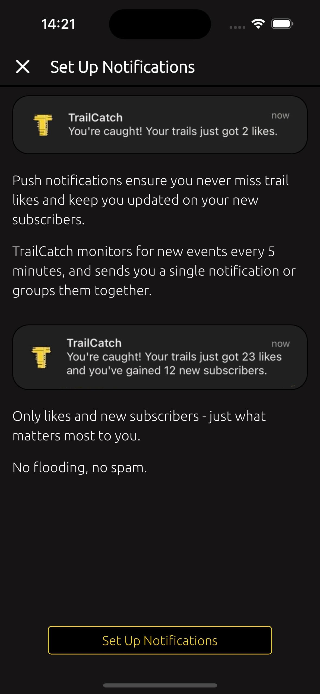
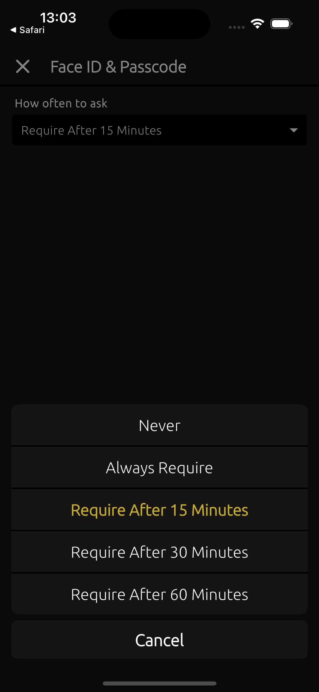

CREATE FUNCTION tc_fn_trails_fetch_nearest(
f_geopoint TEXT,
f_type INTEGER,
f_with_dogs BOOLEAN,
f_users_genders INTEGER[],
f_users_ages INTEGER[],
f_users_uiso3 TEXT[],
f_dogs_breed INTEGER[],
f_stranges_only BOOLEAN,
f_offset INTEGER,
f_limit INTEGER
)
RETURNS JSONB
LANGUAGE plpgsql
SECURITY definer SET search_path = ''
AS
$$
DECLARE
secret0 TEXT;
BEGIN
IF (f_limit IS NULL) THEN
f_limit := 30;
END IF;
SELECT decrypted_secret FROM vault.decrypted_secrets WHERE name = '***' INTO secret0;
RETURN(SELECT array_to_json(array_agg(row_to_json(jsn))) FROM(
SELECT
public.tc_fn_users_fetch(tcu.user_id) AS user,
-- trail
public.tc_fnlib_trail_record0(tct.*) AS trail,
-- trail ext
public.tc_fnlib_likes_count(tct.trail_id) AS likes,
public.tc_fnlib_liked_by_me(tct.trail_id) AS liked_by_me,
public.tc_fnlib_likes_latest_uuids(tct.trail_id, 4) AS likes_latest_4
FROM public.tc_trails AS tct
INNER JOIN public.tc_users AS tcu ON tcu.user_id = tct.user_id
LEFT JOIN public.tc_relationship AS tcr ON tcr.user2_id = tct.user_id
WHERE
tcu.user_id != auth.uid()
AND (tcr.user1_id IS NULL OR (tcr.user1_id = auth.uid() AND tcr.rlship != 0))
AND (f_stranges_only IS NULL OR f_stranges_only IS TRUE AND tcr.rlship IS NULL)
AND tct.trail_id = tcu.latest_trail_id
AND (f_type IS NULL OR tct.type = f_type)
AND (f_with_dogs IS NULL OR (
f_with_dogs IS TRUE AND array_length(tct.dogs_ids, 1) IS NOT NULL
) OR (
f_with_dogs IS FALSE AND array_length(tct.dogs_ids, 1) IS NULL
))
AND (array_length(f_users_genders, 1) IS NULL OR tcu.gender = ANY(f_users_genders))
AND (array_length(f_users_ages, 1) IS NULL OR public.tc_fnlib_age(tcu.birthdate) = ANY(f_users_ages))
AND (array_length(f_users_uiso3, 1) IS NULL OR tcu.uiso3 = ANY(f_users_uiso3))
AND (array_length(f_dogs_breed, 1) IS NULL OR f_dogs_breed <@ public.tc_fnlib_dogs_breed_ids(tct.dogs_ids))
AND tct.intrash IS FALSE AND tct.notpub IS FALSE
AND tct.device_geopoints IS NOT NULL
ORDER BY extensions.ST_Distance(
f_geopoint::extensions.geography,
extensions.ST_AsText(extensions.pgp_sym_decrypt(tct.device_geopoints::bytea, secret0))::extensions.geography,
false
) ASC
LIMIT f_limit
OFFSET f_offset
) AS jsn);
END;
$$;
Frequently Asked Questions / FAQ
1.1. How to create a new account or log in to the app? #
To create a new account, click the "Join TrailCatch" button. Follow the steps on the next screen to set up your account.
If you already have an account, use the "Join TrailCatch" button as well. The app remembers your last login, making it easy to recognize the account you previously used.
TrailCatch effortlessly with your favorite social account.
No emails, no forgotten passwords, no stolen credentials.
1.2. At what age is it allowed to use the TrailCatch app? #
The TrailCatch app is allowed to be used by users aged 16 and older.
This rule is stated in the TERMS AND CONDITIONS.
1.3. How to complete my account creation? #
You need to fill in your account details by specifying your gender and age group. Nationality is optional. Here, you can also add information about your dogs.
After that, you will be directed to the Face ID & Passcode screen, where you can set up secure protection for your account. Next, you will reach the push notification settings screen, and then you should read the information about ATT (App Tracking Transparency) and decide whether to allow it or not.
→ →  →
1.4. Why do I only see the year and month, but not the days, when filling out my age group? #
The TrailCatch app intentionally does not ask for your full birth date. This is done to avoid storing detailed personal data, such as your exact birth date. This helps keep your data more secure.
To determine your age group, the TrailCatch app only uses the year and month of your birth. This is sufficient.
1.5. How to try the app demo? #
To explore the app without creating an account, select the "Try Demo" option. This allows you to log in with a demo account and check out the app's features. Note that some functionalities are unavailable in demo account - you'll see a notification if this applies.
1.6. How to log out of the app? #
To log out of the app, go to the settings menu and select the "Log Out" option. This will disconnect your account from the app while keeping your data safe. You can log back in at any time using the same account.
1.7. Why I need to use Face ID & Passcode? #
To protect your account, it’s best to use iOS security features like Face ID or Passcode (PIN code).
It’s important to note that this type of protection ensures that no one can delete your account without your permission. Only after successfully passing Face ID or Passcode verification can your account be deleted.
2.1. Profile & Dogs #
In the TrailCatch app, you can complete your profile by adding your username, name, gender, age group, and nationality. Additionally, you can include your social media links: Instagram, Facebook, X (formerly Twitter), Strava, YouTube, or your email address.
And you can add your dog to your profile - whether you go for walks, runs, or bike trails together. Plus, you can include as many dogs as you have!
For your beloved dogs, you can specify their name, gender, and age. Even more importantly, you can indicate their breed. Take advantage of the extensive catalog of dog breeds to find the perfect match for your furry friend!
The dog breed catalog is based on open and free information provided by Wikipedia. To learn more about a specific breed, you can either tap on the "Open Wikipedia" button or, if you're in list view, tap on a breed and select "Open Wikipedia."
If you can’t find your dog’s breed in the catalog, don’t worry! You can always manually enter the breed name in the "Custom Breed Name" field.
As the years pass and life takes its course, there come moments when we must say goodbye to our beloved furry friends. To cherish their memory, you can use the "Always in our Hearts" option. This way, you won’t need to remove your dog from the app. While they won’t appear in the selection for next new trails, you’ll always be able to see them in your profile. ❤️

2.2. Statistics #
In the TrailCatch app, the Statistics screen lets you track your history of walks, runs, or bike trails. The graph also includes statistics for activities with your dogs. If your activity involved a dog, it will be marked as such on the graph.
Trails & Distance displays the number of trails completed during the year or month, along with the total distance covered and time spent.
The main graph provides an overview of all your activities over the years - current and past. Scrolling down, you’ll find a monthly breakdown of your trails, including the average pace for walks and runs or the average speed for bike trails.
On the Profile page, just below, you'll find a grid with yellow markers - a nice representation of your monthly activity. You can tap on the grid to view a detailed list of all the trails completed during that month.
And of course, there are your subscribers - where would we be without them! On your profile page, you'll also find the Subscribers section. By tapping on it, you can see a list of your subscribers and the people you’re following (subscriptions).
And let’s not forget about the likes! Likes shows the total number of likes across all your trails. If you tap on Likes, you’ll see your trails sorted by the ones with the most likes.
2.3. Radar #
Each trail has either one or three geolocation points, used to calculate the distance between the trail and its nearest city.
Double-tap on the Radar to discover more cities and their distances.
All trails you see on Radar are sorted based on your selected city, with the closest trails to the city center shown first.
The idea is that you’ll see cities closest to the center point of your selected city, and Radar will display the distances of trails belonging to the nearest city for each.
When a trail has one or three geolocation points, the first (or single) point is always at least 200 meters from the trail's start, the second marks the midpoint, and the third is always at least 200 meters before the trail's end.
Ream more about Radar feature here "2.9. Nearby Your City"
2.4. GeoLocation #
When publishing your trail, you can choose how many geolocation points you want to save - either three or just one. These points are used to determine the distance to nearby cities. If you choose all three, they will be used to find the shortest distance. If you select one point, only that one will be used for the search.
You can also delete all geolocation points from your trail. In this case, your trail will no longer appear in search results, but it will always be visible in your profile.
TrailCatch does not store the geolocation of your trails in plain, open form. All geolocation data is saved on the server in encrypted form. Even if it is stolen, no one will be able to read it.
For more details on how your data is protected, refer to section "3. Account and Security"
2.5. Trails #
In the TrailCatch app, on the main page, you can see a feed of trails from people you’re subscribed to. As soon as your friends publish a new trails, you’ll instantly see them here.
In the Filtered tab, you can view trails through the lens of various filters. The filter has a wide range of functions, and you can learn more about it in section "2.8. Search Filters."
On the Trails page, you’ll find a list of all your trails. To access this screen, tap on Trails from your profile page, or select the corresponding section in the app menu. The menu can be accessed by tapping the icon at the top right of the profile page.
Here you can filter your trails by the devices you've connected with. You can also choose to show only trails involving walks, runs, or bike trails. And of course, you can display only the trails with your beloved dogs.
When you move a trail to the trash, you can always find your trashed trails on the Trails page by tapping the icon at the top. Any trail can be completely and permanently deleted - just tap the icon at the top to view all trails in the trash. Then, tap on the trail icon and delete it. Once a trail is deleted, it cannot be restored unless you upload and publish it again.
2.6. Trail Graph #
Each trail has metadata gathered from the devices it has synced with or from a FIT file.
Trails include the following charts: Pace (only for walks and runs), Speed, Power, Heart Rate, Cadence/Bike Cadence, Respiration Rate, Elevation, Training Effect, and Calories.
When publishing your trail, you can choose to show or hide specific charts. If "Always On" is displayed under a chart, that chart cannot be hidden and will always be shown.
Each chart displays only 10 data points, excluding the starting zero (0) point. As a rule, TrailCatch shows the first kilometer (or mile, depending on your app settings) as the second point, and the last point is the very last point of the trail. All other points between the first and last are displayed randomly. You can tap on the chart to see it change slightly, displaying different trail points. This allows you to find the specific points on your trail and learn more about any given parameter (such as heart rate or power values).
At the top of the chart/graph, you’ll see the value for the parameter. At the bottom, you'll first see the distance point, followed by the time for that point and the distance of trail.
- 38'42 means 38 minutes and 42 seconds.
- 1:44'23 means 1 hour, 44 minutes, and 23 seconds.
If you see "km | miles" in the top-left corner of the chart, you have the option to switch to the original distance measurement scale for the selected trail. People from different countries use different units for distance, either kilometers or miles. Therefore, if one user creates a trail using kilometers, another user who has set their app to display miles will be able to switch to the trail’s display in miles.
The conversion/calculation of distance from kilometers to miles, and vice versa, involves some rounding. Rounding is also applied when calculating average values, so do not treat the trail data as absolutely precise.
Here’s a brief description of each term:
- Pace: The time it takes to cover a specific distance, typically used for walking or running (e.g., minutes per kilometer or mile).
- Speed: The rate at which you're moving, usually measured in kilometers or miles per hour.
- Power: The amount of energy you're exerting while cycling, measured in watts.
- Heart Rate: The number of heartbeats per minute, indicating your cardiovascular effort.
- Cadence: for running refers to the number of steps a runner takes per minute (SPM). It’s a measure of stride frequency and is used to evaluate running efficiency.
- Bike Cadence: Specific to cycling, it’s the pedaling speed (RPM) while riding a bike.
- Respiration Rate: The number of breaths you take per minute, reflecting your breathing effort.
- Elevation: The height above sea level, showing the vertical component of your trail (e.g., ascent and descent).
- Training Effect: A measure of how much a workout increases your fitness level, typically based on heart rate data.
- Calories: The amount of energy burned during the activity, helping to estimate the effort and intensity of your workout.
2.7. Share with Friends #
The TrailCatch app allows you to share your achievements with friends using the sharing feature. You can share both your profile and your trails.
When sharing your trail, you can choose from different modes: Link, Link & Image, and Link & QR.
The QR mode allows you to share the trail by simply scanning the QR code with a compatible app.
2.8. Search Filters #
In the TrailCatch app, you can find some great filter options.
The filter applies to the trails of people you are subscribed to. It can also be used on the Radar page, where you search for trails near a selected city.
With the filter, you can choose:
- Trail type - Walk, Run, or Bike (with or without Dogs)
- Nearby - all trails or only those from people you are not subscribed to ("Strangers Only")
- Genders - Male, Female or Non-binary
- Age groups - from 16 to 80+
- Nationalities
- Dog Breeds
The filters are saved on your phone. Therefore, every time you return to the app, your filters will retain their previously saved settings.

2.9. Nearby Your City #
Each trail can have one or three geolocation points. Using these points, TrailCatch determines the distance from the trail to nearby cities.
On the graph, you can see a Radar chart that shows 8 cities. The cities are arranged based on their geographical location relative to the selected trail.
Here are the 8 cardinal directions and their abbreviations:
- North (N)
- North-East (NE)
- East (E)
- South-East (SE)
- South (S)
- South-West (SW)
- West (W)
- North-West (NW)
For example, "N ~ 37 km" means that the city to the north is 37 kilometers away from the current trail.
You can double-tap on the Radar, and it will refresh, showing new cities with different distances. This way, TrailCatch uses an interesting concept where you can tap on the radar to explore and view which cities are near the trail, depending on their distance in different geographical directions.
If you tap once on the Radar, options will appear that allow you to jump directly to a city you're interested in, to see its location on the map.
Here, you can also repeat the same function as with the double tap on the Radar, by selecting "Catch Next Map ~ 75 km". This means that the next update on the Radar chart will show cities within a 75-kilometer radius from the trail. If you come back to this option later, you’ll see "Catch Next Map ~ 100 km".
In this way, you can search not only for cities close to the trail but also for more distant ones. The available search radius options are: 25 km, 50 km, 75 km, 100 km, 125 km, 150 km, 175 km, and 200 km.
And as mentioned in previous sections, TrailCatch knows about miles! So, if you’ve set your app to use miles for trail distances, the Radar chart will be generated in miles. In that case, it will display "Catch Next Map ~ 75 miles", with available radius search options: 25 mi, 50 mi, 75 mi, 100 mi, 125 mi, 150 mi, 175 mi, and 200 mi.
And it's important to mention again the following: when a trail has one or three geolocation points, the first (or single) point is always at least 200 meters from the trail's start, the second marks the midpoint, and the third is always at least 200 meters before the trail's end. This is the first level of protection for your geographical location.
The second level of protection is the method of storing the geolocation points of the trail - they are stored on the server only in an encrypted form. You can read more about this here "3. Account and Security".

2.10. Devices & FIT #
TrailCatch allows you to create and publish your trails using popular devices such as Garmin, Suunto, and Polar. You can also take advantage of the option to upload a *.FIT file.
Every time you connect a device, the app attempts to synchronize all trails. (In the future, you will be able to select specific time periods for synchronization).
Each time the app is launched, trails are synchronized based on the connected devices. Here, the search for new trails and their synchronization only occurs for the past 24 hours. To add more new trails, go to the Devices screen, select the device you need, and specify the time period you want to synchronize.
Here’s a brief description of the supported devices.
-
Garmin is a leading name in the world of sport
watches, recognized for producing advanced, feature-rich wearables designed
to support athletes and fitness enthusiasts.Garmin is renowned for its sport
watches, offering precise GPS tracking, advanced fitness metrics, and rugged
durability. Popular models like the Forerunner and Fenix series are packed
with features such as heart rate monitoring, VO2 max analysis, and
multisport tracking. These watches are ideal for athletes, providing
comprehensive data to optimize performance and support outdoor adventures.
Read more about Garmin here - https://www.garmin.com
-
Suunto is a prominent brand in the sport watch
industry, celebrated for producing durable and reliable timepieces designed
for outdoor and endurance sports. Known for their robust craftsmanship,
Suunto watches, such as the Suunto 9 and Suunto Vertical, are engineered to
withstand extreme conditions, featuring long battery life, water resistance,
and rugged designs.Suunto emphasizes precision and adventure-readiness,
making their sport watches a preferred choice for outdoor enthusiasts and
athletes seeking both reliability and comprehensive data for their pursuits.
Read more about Suunto here - https://www.suunto.com
-
Polar is a well-established brand in the sport watch
market, known for pioneering heart rate monitoring and providing advanced
fitness tracking technology. Their sport watches, like the Polar Vantage and
Grit X series, are designed to support athletes with detailed performance
insights, precise heart rate data, and personalized training guidance. With
a focus on science-backed data and athlete-friendly design, Polar sport
watches are popular among both professional athletes and fitness enthusiasts
looking to improve their performance and maintain a healthy training
balance.
Read more about Polar here - https://www.polar.com
-
A FIT file (Flexible and Interoperable Data Transfer
file) is a data format developed by Garmin and commonly used by sport
watches to store and transfer fitness and activity data. This file format is
designed to be compact and efficient, making it ideal for recording detailed
workout metrics such as GPS coordinates, heart rate, speed, elevation, and
distance.
Read more about FIT - https://developer.garmin.com/fit/protocol
3.1. How to edit my account data? #
To update your account information, go to the Profile screen and tap on the "Edit Profile" button. This will take you to the relevant screen where you can change your details.
3.2. How to add (or remove) my dog's information to my account? #
To add information about your dog to your account, follow these steps - go to the Profile screen, tap on the "Edit Profile" button and tap on "+1" at the top right corner.
To remove information about your dog, you need on "Edit Profile" screen use red "-" (minus) inside the circle at the top right corner.
3.3. How to delete my account? #
To delete your account, open the TrailCatch app, go to the Settings menu, and select Delete Account.
→ →
3.4. How to connect (link) other social accounts to my current account? #
To link additional social media accounts to your profile, follow these steps - Go to the Profile screen, go to the Settings via Menu, scroll down to "Account & Secure" section, choose "Linked Accounts".
Next, you will see a screen where you can connect (link) new social media accounts.
3.5. How to change distance units, week start day, and date time format? #
To adjust these settings, follow these steps - Go to the Settings via Menu, look for the options "Measurements" to modify:
- Units: Choose between kilometers or miles.
- Start Week On: Select which day you want your week to begin (e.g., Monday or Sunday).
- Time Format: Choose between 12-hour or 24-hour time format for dates and times.
3.6. How to turn push notifications on or off? #
To adjust these settings, follow these steps - Go to the Settings via Menu, tap on the option "Push Notifications" to get the following screen.
3.7. How to unhide a user I’ve hidden? #
To unhide the user back, go to the Settings screen, and under the "Connections" section, navigate to the "Hiddens" screen. There, you can either unhide the user by going to user's profile.
3.8. How to change my Face ID & Passcode settings? #
To change Face ID & Passcode settings, go to the Settings screen, and under the "Account & Secure" section tap on the option "Face ID & Passcode" to get the following screen.
Here, you will be able to choose the following options:
- Never: Never ask for Face ID & Passcode.
- Always Require: Always ask for Face ID & Passcode when opening the app.
- Require After 15 min: Ask for Face ID & Passcode every 15 minutes after opening the app.
- Require After 30 min: Ask for Face ID & Passcode every 30 minutes after opening the app.
- Require After 60 min: Ask for Face ID & Passcode every 60 minutes after opening the app.

3.9. What is displayed on the Notifications screen? #
On the Notifications screen, there are two types of notifications displayed: information about those who have subscribed to you, and details about the likes people have left on your trails.
In the top right corner, you can see the "Tt" icon, which allows you to toggle between displaying either users' usernames or their full names.
4.1. How to contact support and report a bug? #
To contact support or report a bug, follow these steps:
- Open the settings menu in the app.
- Select About option.
- Scroll to Support section.
- Choose the contact method that works best for you.
Support team will get back to you as soon as possible.
→
4.2. What does the error popup dialog in the app say? #
TrailCatch has introduced a feature for direct bug reporting. If an bug/error occurs in the app and a notification appears, you can easily report the issue.
Please use the "Contact Support" button to manually describe the error via any available contact method.
Or, alternatively, tap the "bug" icon located on the right side. This will take you to the Report Bug page, where you’ll see the error logs. From here, you can send a copy of the report using "Send Email" or "Share & Send" through the sharing function. You can also simply copy the bug report to your phone’s clipboard and send it via your preferred method.
And yes, as you may have guessed, TrailCatch is quite transparent about informing users of errors, including details like function and variable names. Rest assured, this is completely safe. The mobile app cannot be hacked, even if the source code is stolen and analyzed. Apple and its App Store have proven the security strength of apps published through their platform for years.
By the way, all data and databases are securely stored on Supabase, which takes great care to ensure the safety of
its services.
Read more about it here - https://supabase.com
5.1. What subscriptions are available in the TrailCatch app? #
The TrailCatch app offers two plans – Free Plan and Premium Plan.
The Free Plan allows you to publish only 2 trails per week.
The Premium Plan allows you to publish an unlimited number of trails per
week.
5.2. Does TrailCatch offer a trial period? #
Yes, TrailCatch app offers a 30-day free trial period, and you won’t need to make any payment to give it a try.
After 30 days, your plan will automatically revert to the Free Plan. To continue enjoying Premium features after this period, you’ll need to purchase the Premium Plan.
5.3. How to purchase a Premium Plan subscription and how much will it cost? #
Since this is a side project (a proof of concept), it's completely free for everyone to enjoy!
To purchase a Premium Plan subscription, you need to go to the Subscription screen in the TrailCatch app and tap on the "Purchase Premium Plan" button.
In general, the Premium Plan costs just 2.99 USD per month. However, the App Store sets the app price based on the user's location and Apple account, so the price you see on your phone during the purchase may vary slightly.
Additionally, Apple adjusts the payment to your local currency and converts the price based on the current exchange rate of your local currency to USD on the day of the transaction.
In any case, the base price is equivalent to 2.99 USD per month.
5.4. Can I cancel my Premium Plan subscription? #
Yes, you can cancel your Premium Plan subscription. To do this, go to your phone settings, select your Apple account, then go to Subscriptions and cancel the subscription there.
5.5. Can I purchase the Premium Plan subscription while already on the Trial Plan? #
Yes, of course. You can purchase the Premium Plan subscription even if you've already chosen the free 30-day Trial Plan and it hasn't expired yet. Thank you!
6.1. Do we share or sell user's personal data? #
No, TrailCatch does not share or sell user's personal data to third parties. This is not our approach; we do not want to profit from selling personal data. Therefore, we will nevers share or sell user's personal information.
6.2. How does the TrailCatch app protect user data? #
TrailCatch takes several measures to ensure user data is protected:
- Data Encryption: User data is encrypted both in transit and at rest,
ensuring that unauthorized parties cannot access it.
You can read more about this in the "10. Technical Details" section. - Secure Authentication: The app uses secure authentication methods, such as Face ID and Passcode (PIN code), to protect accounts from unauthorized access.
- Privacy by Design: TrailCatch minimizes the amount of personal data collected, only asking for necessary information.
- No Data Sharing: We do not share or sell personal data to third parties. Your data is kept private and secure.
- Regular Updates and Audits: The app undergoes regular security updates and audits to stay ahead of potential vulnerabilities.
These measures ensure that your personal information remains safe and protected while using the app.
6.3. Where is all the data stored for the TrailCatch app? #
All data for the TrailCatch app is stored on secure servers, typically using cloud storage solutions that comply with industry standards for data protection and security.
Specifically, we use Supabase, a powerful
backend-as-a-service (BaaS) platform (link here).
The server for TrailCatch app is located in
Frankfurt, Germany.
7.1. How can I contact the TrailCatch app team? #
Team contact information can be found in the Contacts section.
Feel free to reach out to us for any reason - whether it’s to report a strange (or not-so-strange) bug, share your impressions, or simply ask a question.
We’ll be glad to receive any feedback or engage in any topic of conversation!
8.1. How to check which version of TrailCatch is currently installed on my phone? #
The current version number of the TrailCatch app can be found in the About section, accessible via Profile -> Menu -> About.
To check for updates, simply tap the icon to the right of the app version, and you’ll be redirected to the App Store.
→
8.2. iOS and Android support #
At the moment, the app is only available for iOS, supporting version 16.0 and above.
Support for the Android platform isn’t planned just yet. Stay tuned - things might change in the future!
9. Miscellaneous #
There’s nothing to write here just yet. New topics may be added in the future!
As a solo developer on the project, I was looking for optimal ways to implement backend functionality. I wanted to store all the data in structured formats, so I really wanted to use PostgreSQL. With my solid knowledge of Linux, I considered using a DigitalOcean service to set up a small Linux server with a PostgreSQL database. But then, I thought about the process of setting up the server, configuring the database... and optimizing all the processes. Plus, I imagined that things would inevitably crash periodically. Then there are backups and other administrative tasks. Knowing from experience how much time this would take and how complicated it would be for a single person, I decided to dismiss the idea of using a VPS or dedicated server.
So, cloud computing was the next option. The big players offer mind-blowing possibilities to do this and that, and then another thing, and then through this. The only thing left is to find a major investor who would be willing to invest $1M into the project to cover all the expenses... Well, okay, that’s a joke, of course. But for someone developing a project alone without funding, the big cloud providers are simply out of reach.
And then I remembered this amazing backend-as-a-service (BaaS) platform called Supabase (not an ad).
With Supabase, I was able to solve my backend dilemma - SQL queries + RPC from mobile side. And yes, without a single line of backend code.
The database structure looks like this:
The entire functionality of the database operates through just 7 small tables.
I don’t store user passwords in the database. All logins are done through users' social media accounts. I also don’t use an email + password combination. When there’s nothing sensitive to store, there’s nothing sensitive that can be stolen.
Here, I want to show how user personal data looks when synchronized with their devices during trail creation. This includes how geolocation points are stored.
These data aren’t stored in plaintext. Before adding this data to the database, I encrypt it using the PostgreSQL function pgp_sym_encrypt. The encryption happens on the Supabase Vault platform with their keys, which are stored separately from the backend. This means that even if all the database data is stolen, sensitive user data, such as heart rates and geolocations, will remain encrypted.
Here’s how user's contacts look in the database.
After defining the overall database structure, the next step is to describe the SQL functions that handle all backend operations.
It’s worth mentioning that I don’t use a dedicated backend language (like JavaScript + Node, Python, Java, or Rust… Rust, hmm, that would have been a good choice). To simplify the task and avoid maintaining the backend part, I decided to build everything on PostgreSQL functions, which are called from the mobile app via RPC (remote procedure call).
Here’s an example of one such function. In this case, I’m searching for the nearest trails to a city's geographic coordinates.
. . .
Next is the mobile side of the TrailCatch app.
When it comes to say the technology I chose for building the mobile app, it’s quite straightforward - Flutter. It’s an excellent framework for mobile app development from Google. I’ve been working with it for years now, and I’m very satisfied with the experience.
For those familiar with the stack, here’s the combination I use:
Flutter + Provider + GetIt + FL Chart + Supabase + Qonversion + Geosort +
Geodesy + Sentry + Firebase Messaging + Encrypted Shared Preferences.